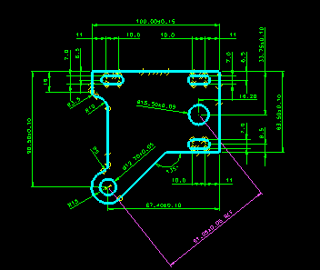
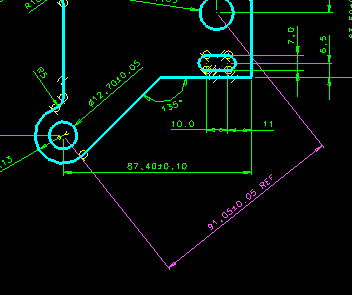

This example shows how VGx technology allows you to so Statistical Tolerance Analysis on a 2d sketch.
Model file :- VGx_vignettes.mf*




Use the Standard Analysis icon to perfrom the analysis.


Select the top line in the form, this will colour code red that dimension on the sketch.
Tech Tips
Talk about the Upper and Lower tolerances, worst stackups and the statistical basis for the pass rate percentage. Then about the contribution percentages. Point out that the s/w understand the geometric tolernaces of parallel, perpendicular, conincident etc.